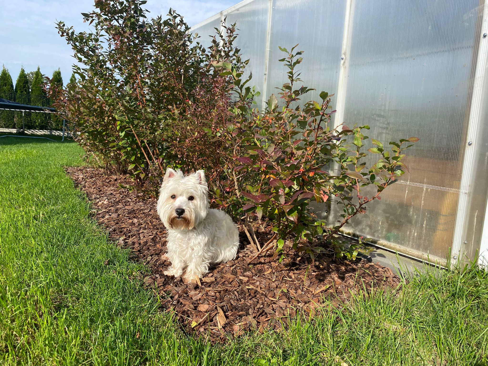
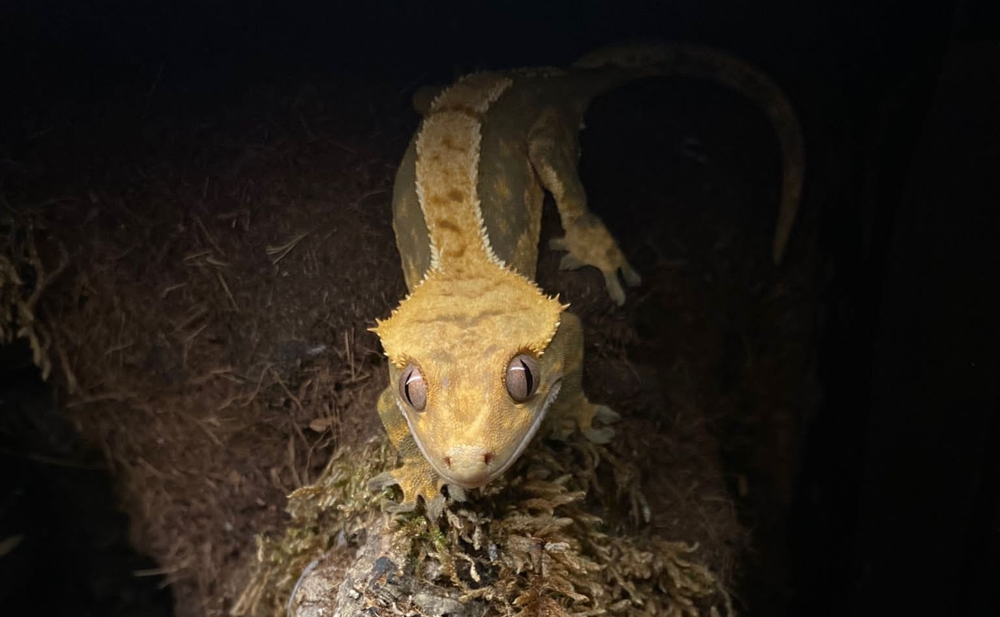
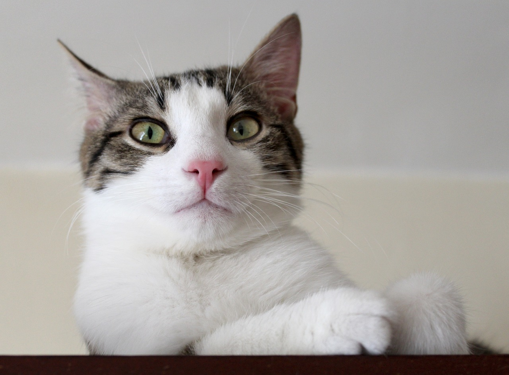
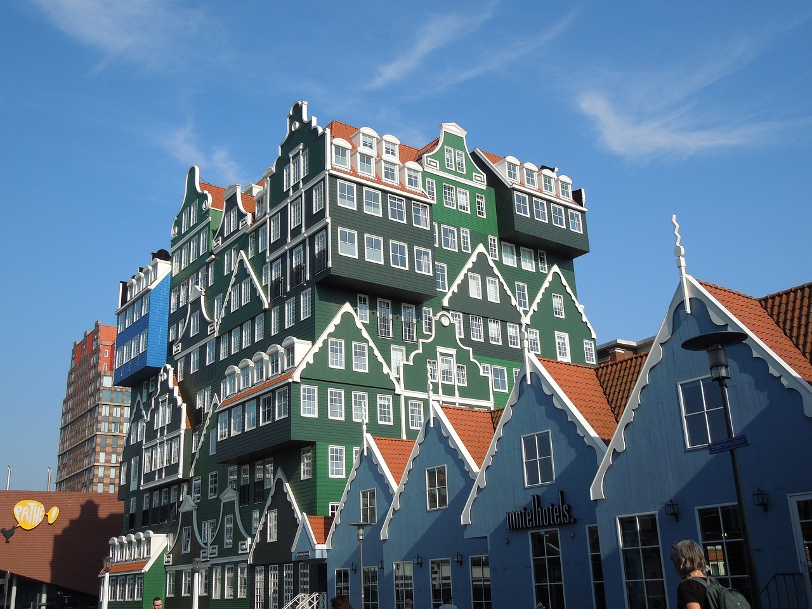
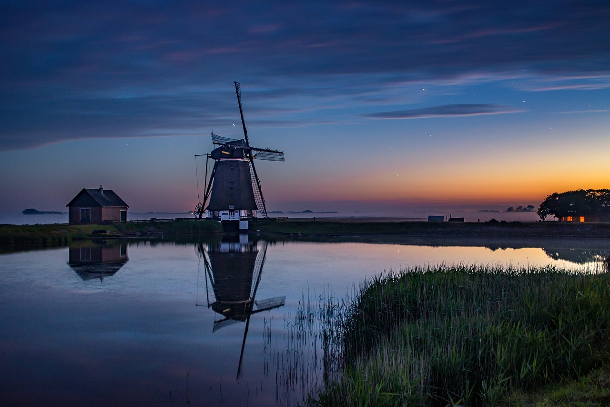

Witaj na mojej stronie!
O mnie
Hey! Jestem Ania i mam 12 lat. Kocham czytać książki, szczególnie te przygodowe. Ale to nie wszystko, uwielbiam spędzać czas grając w Minecrafta - to moja ulubiona gra, w której mogę budować swoje własne światy, odkrywać tajemnicze jaskinie i przeżywać przygody! Mam frajde gdy tworzę własne domki, spotykam zwierzaki i stawiam super konstrukcje! To najlepsza zabawa!😉 Lubię też rysować i malować. Moje ulubione miejsce to mój pokój, gdzie mogę tworzyć i być kreatywna.


Moje hobby
Moje zainteresowania obejmują nie tylko Minecraft, lecz także gry planszowe! Cieszę się spędzając czas z rodzeństwem i przyjaciółmi nad planszówkami. Szczególnie bliski mojemu sercu jest 'Magiczny Las' - fascynuje mnie zdobywanie skarbów oraz rozwiązywanie zagadek! Uwielbiam też rysować, to chyba u nas rodzinnie, bo moja mama jest bardzo uzdolniona plastycznie! Posiadam całą szufladę wypełnioną kredkami, farbami i markerami do rysowania. Najbardziej lubię rysować postacie z moich ulubionych książek i bajek.

Moje zwierzaki
Mam trójkę super kumpli futrzastych! Zaczynam od mojej wesołej kulki energii - Lali! Jest West Highland White Terrierem, ale dla nas jest jak mały biały wulkan radości. Ma 3 latka i jest najbardziej super pupilem na świecie! Lubi chodzić na spacery, szczekać na ptaki i kocha układanie się do spania na moim kocyku.
Spotkajcie Fionę moją skalną gwiazdę. Gekon orzęsiony! To mała jaszczurka o jasnozielonym grzbiecie i ciekawych oczach. Spędza większość czasu na skałach w swoim terrarium, uwielbiając się opalać pod lampą i łapać ciepło. Czasami pokazuje swoje orzęsione oczy, kiedy jest szczególnie zainteresowana czymś, co dzieje się na zewnątrz. Kocha się wylegiwać na skałach i czasem robi sobie mini-wspinaczkę po ścianie terrarium.
To jest nasz kotek! Ma mięciutkie, czarne futerko i białe łapki. Nazywamy go Sokrates, bo czasami robi miny, jakby był jakimś kocim filozofem! Jest bardzo ciekawski i lubi węszyć wszędzie, gdzie tylko może. Ale najbardziej lubi wylegiwać się i spać w ciepłych miejscach.
Moje podróże
Moje podróże to niesamowita przygoda! Razem z rodzicami odwiedziliśmy kilka fantastycznych miejsc. Nasza podróż do Bośni była jak podróż w czasie! Zobaczyłam starożytne zamki, słuchałam opowieści o legendach i próbowałam pysznej lokalnej kuchni.
W Chorwacji, morze Adriatyckie robiło niesamowite wrażenie – pływaliśmy, zbieraliśmy muszelki i chodziliśmy po malowniczych plażach.
A Holandia to jak bajka! Zwiedzaliśmy urokliwe kanały, widzieliśmy wiatraki i zjedliśmy mnóstwo pysznych serów. Każda podróż była dla mnie niezapomnianym doświadczeniem i pełna niezwykłych wspomnień!  